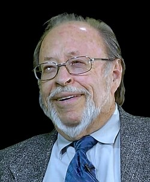

Roger Leir
Podiatrist and author, 1935 to 2014

A California podiatrist who, starting in 1995, surgically removed small objects from people who reported alien abductions and promoted them as alien implants. 1
His 1999 book The Aliens and the Scalpel described the surgeries. His claims have not been independently verified. 1
Open in the interactive Watcher
Related
- The Aliens and the Scalpel Wrote The Aliens and the Scalpel
Sources
- Roger Leir Wikipedia